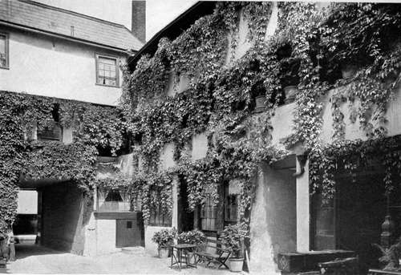
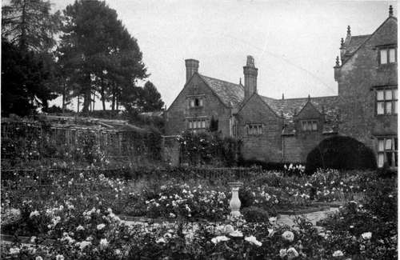
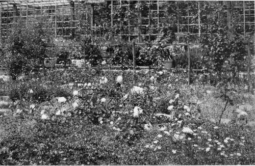
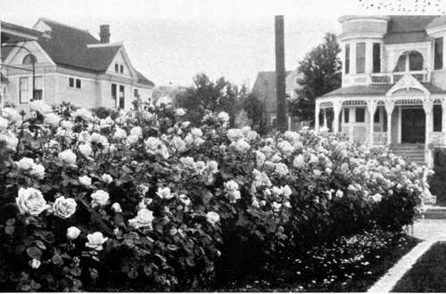
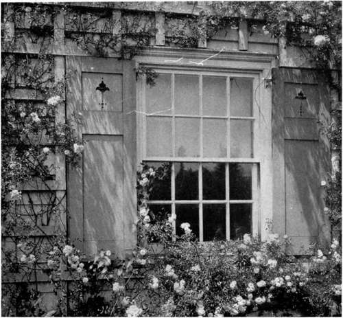
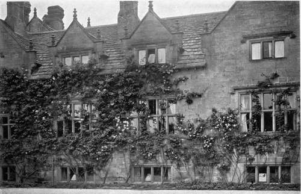
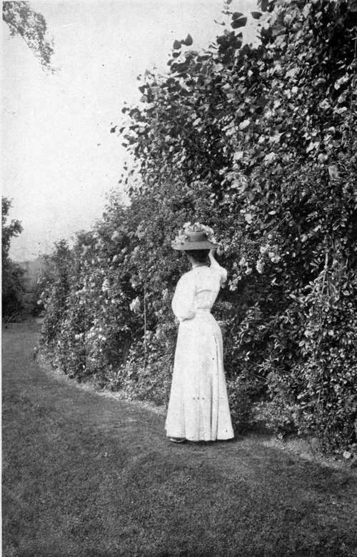

Chapter X. Rose Gardens
Description
This section is from the book "What England Can Teach Us About Gardening", by Wilhelm Miller. Also available from Amazon: What England Can Teach Us About Gardening.
Chapter X. Rose Gardens
The wrong old notion that roses should be grown only for cut flowers or in a place apart, in bare dirt or in manure heaps — How roses may be restored to the garden with glorious new effects.
THE most inspiring rose garden I saw in England was that of Mr. William Robinson, founder of The Garden, and author of that immortal book, "The English Flower Garden." To give any hint of this garden's beauty, three photographs at least are required. The one at plate 40 indicates the general effect; one at plate 41 shows that the beds are not one great expanse of dirt or manure, but are carpeted with exquisite little flowers or shining evergreen foliage; while the one at plate 45 makes it clear that these carpeting plants do not seriously interfere with the quantity or quality of the roses. Incidentally, these pictures ought to convince any fair-minded person that the great apostle of landscape gardening in England has been misrepresented by those who claim that he has no appreciation of formal gardening.
How much better this idea is than the one which has been preached for half a century, viz., that the rose should be banished from the garden and grown in a place by itself, called the roseryl Everywhere you find the notion that a rose bush is fit for nothing except to produce perfect flowers for cutting. And everywhere you see rose gardens from which all romance has fled. They may make a big show in June, but the rest of the year their beauty is destroyed by spraying mixtures, manure, straw overcoats, and stems cut back to stubs.
There were two excuses, fifty years ago, for banishing the rose from the garden. For at that time there were no roses that bloomed all summer; and the old-fashioned rose bushes (hybrid perpetuals) were generally unsightly when out of bloom. Especially were these things true in America. For even to this day the hybrid perpetuals give few flowers or none after June, as compared with Europe. Also we have more insects and diseases to fight than the Europeans. Our rose bug is worse than all their rose pests put together, and even to-day we have found no cheap way to control it.
But the old excuses no longer hold good. For now we have the hybrid teas, which really bloom all summer (though scantily in August in America), and these roses make graceful bushes (unless they are pruned back severely by people who are willing to sacrifice garden effect in order to get the largest flowers possible for vases).
Moreover, we now have far better climbing roses, especially hybrids of the many-flowered, and memorial roses, such as Dorothy Perkins and Lady Gay, and therefore we can have better arches, trellises, bowers, arbours, and summer houses than ever before. And this is the artistic way to get height in a rose garden instead of using standards, which are as ugly as they are perishable. I do not blame any one for wishing to get some relief from the flatness of the conventional rosery, but tree roses are a grotesque solution, since they cannot hold themselves up but have to be staked. Moreover, they are pitifully thin, whereas these Japanese climbers supply us with the one thing that we have always needed most, viz., luxuriance.
WE HAVE TO GO TO ENGLAND TO SEE THE POSSIBILITIES OF OUR OWN NATIVE VINES. COURTYARD OF THE NEW INN AT GLOUCESTER, (ERECTED ABOUT I450), SHOWING THE VIRGINIA CREEPER STREAMING DOWN FROM ABOVE. THE TRAILING EFFECT IS EVEN FINER THAN THE CLIMBING. Sic pa^e go and plats 74.
THE MOST INSPIRING ROSE GARDEN IN ENGLAND IS THAT OF MR. WILLIAM ROBINSON, AT GRAVETYE, SUSSEX. HERE ROSES BLOOM ALL SUMMEP, AND THE BUSHES ARE GRACEFUL-NOT UGLY STUBS WHOSE ONLY USE IS THE PRODUCTION OF BIG FLOWERS FOR CUTTING, See page o$.
Mr. robinson's rose beds are not great stretches of bare dirt or manure, but are carpeted with flowers and evergreen foliage. the lace like effect is due to saxifrages, most of which are impossible for america. the species best worth our trying is london pride (Saxifraga umbrosa.) Sec pages 97 and 98.
Oregon is the only part of the united states with a climate like england's. in portland, streets are lined with roses like these. See page QQ.
This connecticut house was latticed so that the walls could be covered with climbing roses. one of a thousanl new pictures we can paint with ramblers.
"WE CANNOT YET PRODUCE LARGE DOUBLE ROSES ALL SUMMER ON HOUSE WALLS UP TO THE THIRD STORY." AT GRAVETYE. See page ioo.
THIS IS THE TYPE OF ROSE BEAUTY IN WHICH WE CAN EQUAL OR EXCEL ENGLAND •— CLIMBERS WITH MANY SMALL, DOUBLE FLOWERS IN LARGE CLUSTERS. THE DOROTHY PERKINS ROSE IN ENGLAND, A LOVELIER FLOWER THAN THE GAUDY CRIMSON RAMBLERS. See page 100.
The finishing touch, however, in the new type of rose garden is supplied by the carpeting plants, which not only hide the bare earth but give a second crop of flowers from the same ground. Although there is an astonishing variety of them in Mr. Robinson's garden, the main effects are three. The showiest is that of pansies and violas. Pansies have bigger flowers and a wider range of colours but a shorter season of bloom, and they have to be raised anew each year from expensive seed. In America they will bloom freely only in the spring. Violas, which are also called "tufted pansies," make a much neater carpet, bloom all summer (except for a fortnight's enforced rest), and are more nearly perennial, so that when you find a variety to your liking you can propagate by division the identical thing you like best. Elsewhere in England I saw the rose-and-pansy idea carried out on a gigantic scale — seven thousand roses and eighty thousand violas — but I am sure that Mr. Robinson would not have enjoyed it. Like every true artist he believes that formulas tend to kill spontaneity and imagination. He abhors carrying out any gardening idea (even his own) to its logical conclusion. Apparently he believes that perfection of detail inevitably suggests straining after effect, whereas a garden should always be easy, graceful, and unconcerned.
Continue to:
Tags
garden, flowers, plants, England, effects, foliage, gardening